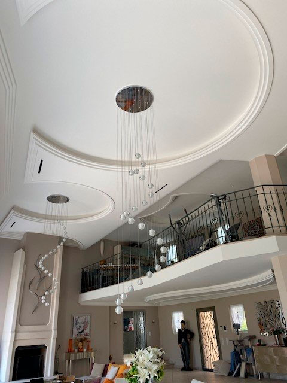
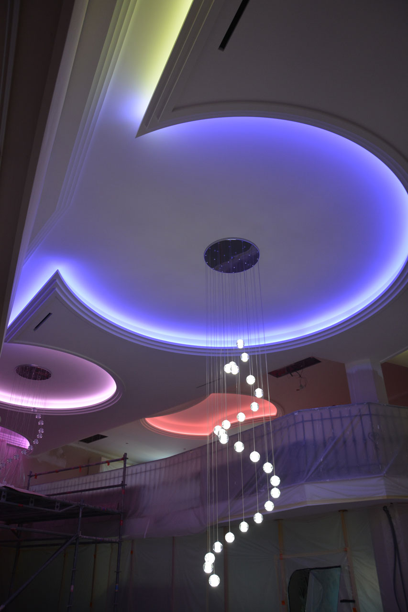
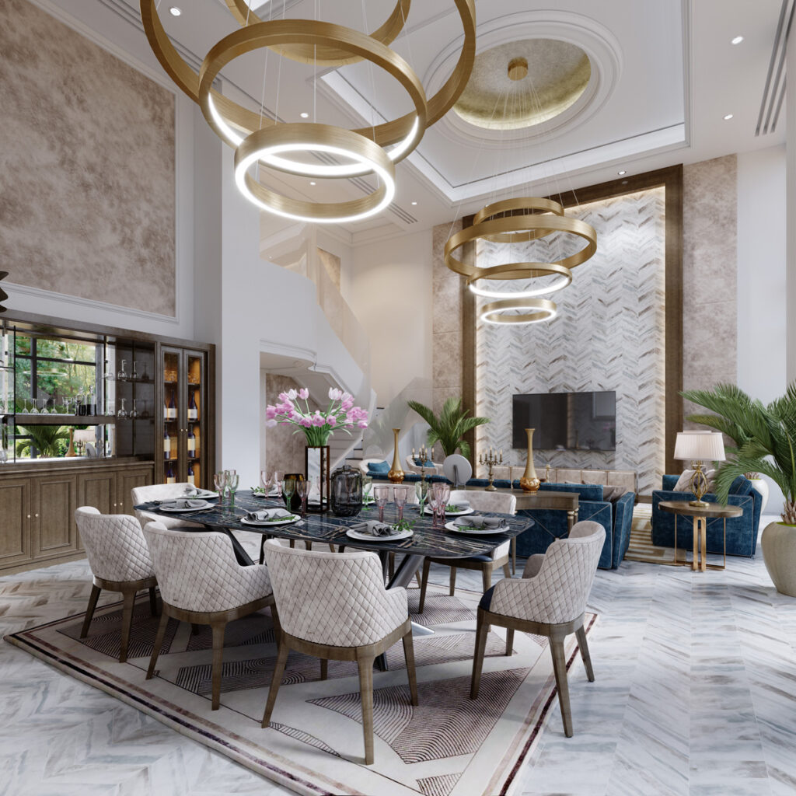

Nos Services
Nous offrons une variété de services de décoration intérieure utilisant du staff pour donner un aspect élégant et raffiné à vos espaces.
- Création et installation de moulures décoratives
- Décoration intérieure personnalisée
- Restauration de bâtiments anciens
Galerie
Voici quelques exemples de notre travail :
  En savoir plus
Pour plus d'informations sur nos services et réalisations, visitez notre site officiel.